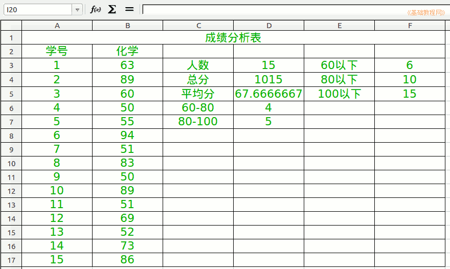

2012-2013 第一学期八年级电子表格教学设计
作者：TeliuTe 来源：基础教程网
十七、学会统计分数段 返回目录 下一课
（一）教学设计
1、学习目标：学会统计分数段
2、注意事项：举一些容易理解的例子
3、教学过程：
1）教师准备学案和板书；
2）学生整队进入，开机抄黑板上笔记；
3）教师讲解板书演示操作；
4）学生打指法、日志、完成操作；
5）教师打勾记录学生指法成绩，检查日志和操作；
注：学生抄完笔记就开始打指法、日志，老师讲完后再继续完成；
（二）板书设计(学生笔记)
第17课 学会统计分数段
1.用随机函数Reandbetween,填充15人成绩50-100.
2.用统计函数count计算考试人数
3.总分函数sum，平均分Average是函数
4.用及格数countif分别算出60和80以下
5.用80分以下减去60分以下人数。
操作图示：

（三）课后记 2012-11-14 18:41
--
不好举例子，虽然经常碰到
找不到一个生活中的好例子来类推一下
--
绕弯明显不是很好，只是照着做出来
并没有理解意思，后面自己再琢磨好了
--
只能直接从字面上来理解了，60-80的中间是减号，用减法来算
100要用等号要不会少，用顶点来解释，60、80都不是顶点，不需要等号
--
检查的时候，只要60以下、60-80、80-100三个加起来等于15总人数就可以了
有的直接就用手工算了，前面的公式应该多花两课才好
--
学生还是喜欢操作的，对这些绕弯理解的缺乏自信
经常说别着急，老师把××同学勾完就过去，也是给自己提醒别着急
--
一节课后，有较多的没做出来的，看来还是绕弯多了一些，
要不去掉一个分数段，只要80-100的就可以了
返回目录 下一课
本教程由86团学校TeliuTe制作|著作权所有
基础教程网：http://teliute.org/
美丽的校园……
转载和引用本站内容，请保留版权信息和本站链接。